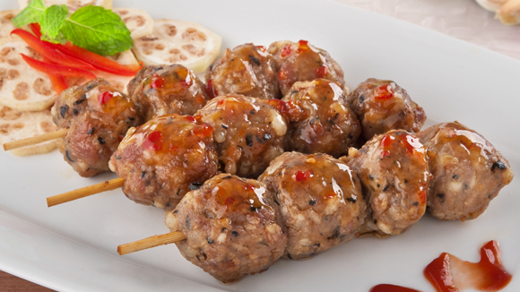

Nem nướng chuối hột ngâm chua

- Khẩu phần 6
- Chuẩn bị phút
Nguyên liệu
- 500g thịt đuồi heo
- 200g mỡ khố
- 50g sa heo
- Lòng heo khô
- 10g tỏi
- Pm muối
- Pm tiêu sọ
- 1 thìa cà phê đường
- 1 thìa hạt Hạt nêm từ Thịt thăn, Xương ống
và Tủy bổ sung Vitamin A
- 2 trái chuối hột ngâm chua
- 50g ớt hiểm khô
- Pm mù tạt
- 1 trái chanh
- Pm tương ớt
Hướng dẫn thực hiện
- Rửa sạch thịt bằng muối và chanh theo tỷ lệ 1 lít nước: 10g muối: 10g
nước chanh.
- Để ráo nước và lau khô. (1)
- Mỡ khổ, da heo rửa sạch, lau khô thái hạt lựu.
- Đem (1) xay nghuyễn, nêm gia vị gồm hạt nêm gà , muối, tiêu sọ, đường.
Khi thịt heo đã nhuyễn và điều gia vị thì tắt máy cho mỡ khổ và da heo vào
trộn điều.- Hỗn hợp (A)
- Hỗn hợp A cho vào lòng heo khô. Bảo quản trong ngăn mát tủ lạnh đến khi
cây nem cứng lại.
- Áp chảo hoặc nướng Nem đến chín. Tháo lớp vỏ bên ngoài hoàn thành. (3)
- Chuối hạt ngâm chua xả với muối và nước sạch, xào cùng tỏi, ớt khô nêm
gia vị. (4)
- Trang trí món ăn gồm (3) và (4).
- Món ăn kèm cùng mù tạt và tương ớt.